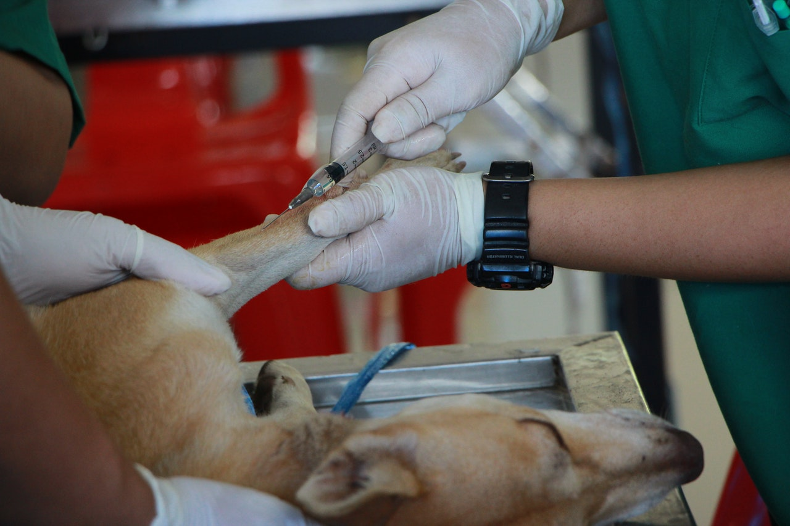
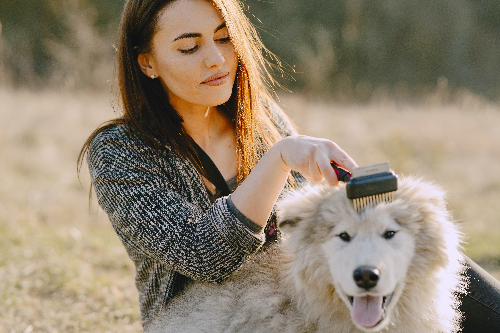
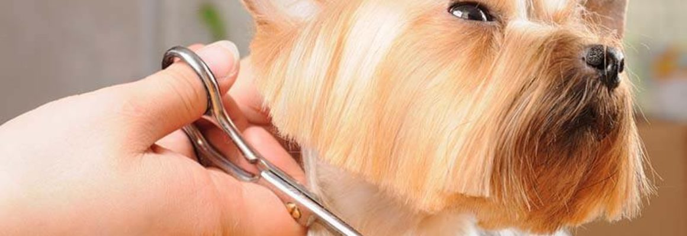
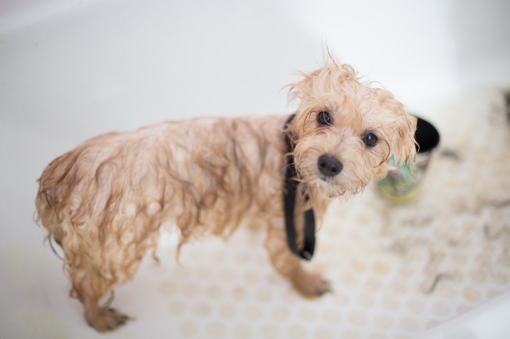
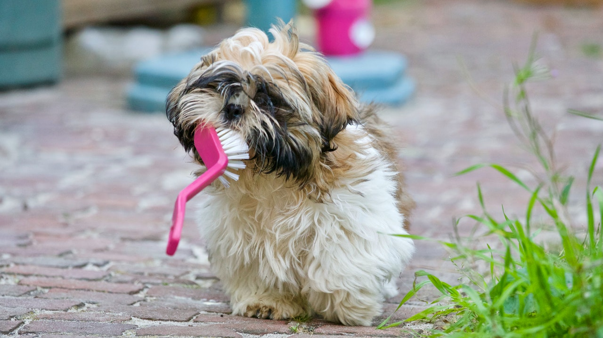

Prva vakcina koju pas može da primi je “puppy“ vakcina protiv mačije kuge i štenećaka. To je jedina vakcina koja može da se primi već sa 6 nedelja i obezbeđuje kratkotrajni imunitet. Sledeća je petovalentna vakcina koja se prima sa 8 nedelja i koja štiti naše ljubimce od:
Nakon što je vakcina data imunitet nastupa za 7-14 dana (pa u ovom periodu još treba paziti na štene i ne dopuštati mu kontakt sa drugim psima). Obzirom da imuni sistem mladunčadi još nije dovoljno razvijen da pruži trajniju sigurnost, sa 12 nedelja starosti se radi revakcina koja pojačava otpornost od ovih istih bolesti. Ovde moramo istaći da iako od ovih bolesti najlakše oboljevaju štenci, od njih mogu oboleti i odrasli psi pa je neophodno ovu vakcinu ponavljati svake godine.
Vakcinacija pasa protiv besnila obavezna je po zakonu i mora se obavljati jednom godišnje. Zakon propisuje korišćenje mrtve vakcine koja stvara solidan imunitet bez ikakavih propratnih reakcija. Prva vakcina protiv besnila može se dati već sa 3 meseca starosti ali program vakcinacije obično ostavlja ovu vakcinu za četvrti mesec. Priče koje kruže da će pas ostati mali i da neće dostići svoj pun potencijal su apsolutno netačne i predstavljaju samo još jednu zabludu sa kojom se borimo svakoga dana. Novi Sad je područje koje je često ugroženo besnilom i to je još jedan razlog da obavezno vakcinišete svog psa i tako sebe i svog ljubimca poštedite komplikacija koje donosi izbegavanje vakcinacije. U vezi sa ovim neophodno je napomenuti da smo zakonom obavezni da prilikom vakcinacije protiv besnila životinju i obeležimo.
Kod pasa ponekad može doći do preterano jakih reakcija, takozvanih alergija. One mogu biti tako jake i brze da osim uzročnika unište i organizam psa. Takve reakcije često se događaju nakon uzimanja nekih lekova. Poznato je da neki antibiotici dovode do takvih reakcija. Osim njih, u veterinarskoj medicini do takvih i sličnih reakcija, često dovode preparati vitamina otopljeni u uljima, a primenjeni u obliku inekcija ili različitih vakcina. Psi mogu biti preosetljivi i na stvari koje u organizam unose putem hrane, ili na različite supstance u vazduhu koje udišu. Međutim, ova preosetljivost nikada ne ugrožava život psa – ove alergije su blažeg i produženog toka. Alergije koje ugrožavaju život psa, uglavnom su izražene jakim reakcijama koje završavaju šokom ili smrću za samo par minuta ili, pak, teškim disanjem i gušenjem, usled koga može doći do smrti. Ovakve reakcije se mogu sprečiti i bez posledica otkloniti ukoliko se odmah pristupi lečenju. Kod pasa se često može javiti i preosetljivost na hranu, a glavni krivac su belančevine. One mogu biti različitog porekla, pa ih tako pas konzumira u mesu, mlečnim proizvodima, jajima, povrću ili žitaricama. Preosetljivost na hranu češće se javlja kod mlađih pasa, kod kojih su i alergijske reakcije jače. Najčešći znaci preosetljivosti na hranu su: povraćanje, proliv, svrab uz perutanje i otpadanje dlake, upaljena koža. Jednom razvijena, alergija može trajati doživotno, a rešenje je izbacivanje belančevina iz ishrane.
Češljanje pasa je deo osnovne higijene i održavanja dlake. Nažalost, mnogi nisu dovoljno uporni ili su jednostavno lenji. Sa češljanjem treba početi što ranije, iako se svi štenci bune kada je češljanje u pitanju. Važno je znati da je neredovno češljanje i šišanje najgore što se može dogoditi. Ukoliko se češljanje zanemari, dlaka vašeg ljubimca se pretvara u hrpu čvorova koji su po životinju vrlo neugodni a posebno nezdravi. Dlaka počinje imati neugodan i intenzivan miris, a često se javljaju i kožne bolesti. Četka je pribor koji se vrlo često koristi u redovnom uređivanju i nezi dlake. Koristi se nakon češljanja češljem za završno uređivanje. Najbolja je četka od prave svinjske čekinje. Čekinje bi trebale biti dovoljno duge da kroz dlaku dosegnu do kože. Za kratkodlake rase pasa dobre su kratke guste četke, kao i ”pseće”rukavice i gumene četke jer one na principu elektriciteta privlače dlaku i tako je uklanjaju. Prilikom češnjanja psa glatke dlake potrebno je pratiti smer rasta, počevši od glave i idući ka repu. Za dugodlake rase pasa, treba koristiti četke dugih i ređih čekinja umetnutih na gumenu osnovu. Posebno je važno dobro pročešljati predeo trbuha, unutrašnji deo nogu, kao i delove oko vrata i ušiju.
Šišanja takođe spada u deo osnovne higijene i održavanja dlake. Šišanjem se mrtva dlaka uklanja iz krzna, a rezultat šišanja je uredan i čist pas! Dlaka na leđima je deo tela koji nije naročito osetljiv, pa će većina pasa dozvoliti češljanje i tako održavanje dlake. Međutim, dlaka ispod pazuha, na stomaku i između jastučića na šapama često stvara probleme i vlasniku i psu. Šape su jako osjetljive i nakon nekog vremena, ta se dlaka pretvara u tvrdi grumen, pun kamenčića i travki, dolazi do povrede šape i šepanja. Redovno sređivanje šapa svakako je preventiva takvih problema.
Sa kupanjem pasa može se početi već u uzrastu od 2-3 meseca. Pre samog kupanja treba pripremiti sve što je potrebno. Psa je potrebno dobro raščešljati jer zapetljana dlaka ili još gore čvorovi znaju napraviti velike probleme kada se pokvase. Kupanje je najbolje obaviti u kadi, u zagrejanoj prostoriji i u toploj vodi. Dlaka se prvo dobro namoči, a zatim se šamponira. Ne treba koristiti jake šampone. Potrebno je dva puta našamponirati i dva puta isprati psa. Šampon se nanosi prvo na leđa, pa na trbuh, noge i rep. Veliku pažnju treba obratiti na delove oko očiju i ušiju jer su oni najosetljiviji na šampon. Dobro isperite vašeg psa! Nedovoljno isprana dlaka može iritirati i isušiti kožu. Dlaka se blago iscedi rukom a zatim se dobro obriše peškirom. Sledeće je sušenje. Prilikom sušenja ne zagrevajte predugo jedno isto mesto i ne sušite blizu kože. Fen postavite u prirodnom smeru kretanja dlake a možete istovremeno i koristiti četku. Tako možete formirati željenu frizuru i prilikom češljanja proveriti da li pas ima buve i krpelje ili neke kožne probleme.
Belo - žućkasta naslage na površini zuba predstavljaju bakterije koje napadaju desni i prouzrokuju njihovu upalu – gingivitis. Prisustva ogromnog broja ovih bakterija u organizmu, može dovesti do ozbiljnih komplikacija: infekcije na srčanim zaliscima, oboljenja bubrega i jetre... Najbolji način da se očuva higijena i zdravlje zuba je svakodnevno čišćenje zuba sa posebno oblikovanom četkicom za pse I posebnom pastom za zube koja je namenjena isključivo psima. Nikako ne koristiti zubnu pastu za ljude! Na ovaj način ćemo uklaniti sav kamenca sa površine zuba. Postoje razločiti proizvodi koje psi rado žvaću i time mehanički čiste zube, a veterinar vam može preporučiti i posebnu vrstu hrane koja efikasno održava zube čistim i smanjuje stvaranje kamenca.
Krpelji su paraziti koji piju krv najčešće toplokrvnih životinja, pasa, mačaka i ljudi. Mačke iz nekog razloga privlače krpelje znatno manje nego psi. Često prenose mnoge bolesti od kojih su neke smrtonosne, ako se ne otkriju i ne leče! Najčešće staništa krpelja su šume, žbunovi i visoke trave. Dok se ne zabode u domaćina, krpelj je veoma malih dimenzija, svega 1 do 2 mm. Ženke krpelja koje se zabodu sisaju krv i kada se dovoljno napiju same se otkače, padaju na zemlju i polažu jaja, koja se u proleće razvijaju u male krpelje. Što je krpelj manji on je agresivniji! Krpelj može šetati satima po telu pre zabadanja i zato je bitno svakodnevno kontrolisanje psa. Omiljene zone zabadanja su deo zadnjih nogu ispod zadnjice, predeo ispod vrata, predeo iza ušiju i obrazi psa! Ideje o posipanju krpelja acetonom, benzinom, uljem, spaljivanju krpelja - ne samo da su pogrešne već su i opasne! Naime, ukoliko krpelj oseti bilo kakvu hemikaliju na sebi, povratiće svu krv iz sebe u psa i to zajedno sa virusom ili bakterijom, što inače ne čini! Kada ste pronašli krpelja, ako ste ga uzbudili sačekajte minut da se smiri i otpusti svoje rilice koje je grčevito zabio u psa jer ste ga dirali prstima. Sada sa palcem i kažiprstom leve ruke nežno uzmite kožu psa, palac i srednji prst desne ruke spojite, priđite krpelju tako da ne zgnječite, povucite od kože psa nagore, mirno i brzo. Postoji SPECIJALNA PINCETA ZA VAĐENJE KRPELJA, koja ima rupu na vrhu i koja obuhvata krpelja oko rilica, ali ih ne dodiruje, tako da se čupa ceo krpelj.
Kod pasa, mačaka i ljudi buve mogu da parazitiraju bez pojave posebnih simptoma, ali u pojedinim slučajevima, usled pojave preosetljivosti, nastaje oboljenje kože. Buve delimo na pseće, mačije i svinjske vrste buva. Pseća buva ne napada čoveka, dok mačija i svinjska napadaju sve. To su mali insekti, dugački od 2 do 4 mm dugački, bočno spljoštenog tela, smeđe do crne boje. Na psu pronalaze zaštitu od hladnoće i bogat izvor potrebne hrane. Hrane se pretežno otpadnom organskom materijom – osušenim ljuspicama kože i loja, osušenim ostacima izmeta oko čmara, ali i krvlju do koje dolazi ubadajući kožu. Iako se skoro može reći , da ne postoji pas koji nema buve, neki psi veoma dobro podnose invaziju od nekoliko stotina buva, dok su drugi preosetljivi već na prisustvo samo jedne. Osim što izazivaju svrab kod pasa, buve mogu dovesti i do nekih bolesti. Poznato je da buva, probivši kožu svojim rilom, ubrizgava pod kožu slinu koja sprečava zgrušavanje krvi kojom se hrani. Ova slina može dovesti do jake alergijske reakcije u obliku neugodnih ekcema.
Usled nepravilnog rada gušterače, kod pasa dolazi do nastanka šećerne bolesti. Karakteristični simptomi bolesti su: žeđ, obilno mokrenje, mršavljenje, teško zarastanje rana i sklonost ka gnojnim procesima na koži, dah psa ima karakterističan miris na aceton. Ukoliko se bolest ne leči, pas može pasti u šećernu komu i uginuti. Lečenje se sprovodi svakodnevnim davanjem hormona insulina uz strogi režim ishrane. Psa je moguće održati u životu oko godinu dana od trenutka postavljanja dijagnoze.
Bolest se javlja kod starijih pasa nakon infekcije Leptospira canicola bakterijom. Pas je stalno žedan, a koža mu postaje suva. U kasnijem stadijumu bolesti počinje često da povraća, ima proliv i veoma često urinira, dah mu postaje neprijatan, urin je veoma svetle boje, gotovo vodnjikav, a u poodmaklom stadijumu bolesti, pas potpuno prestaje da urinira. Bolest se javlja u dva stadijuma:
Pneumonija, upala pluća, je infektivno obolenje pluća kojeg izazivaju virusi, bakterije i gliste. Simptomi su: visoka temperatura, otežano disanje, kašalj, pokuljenost, gubitak apetita. Ukoliko prislonite svoje uvo na grudi psa, čućete zvuke nalik škripanju. Psa je potrebno što pre odvesti kod veterinara.
Pas dlaku menja dva puta godišnje – u proleće i u jesen. Ovaj proces naziva se linjanje. Ukoliko je organizam dovoljno snabdeven materijma potrebnim za uzgradnju nove dlake, linjanje se odvija brzo i bez problema. Međutim, povremeno može doći do produženog linjanja. Najčešći uzrok je nedostatak vitamina A i biotin koji spada u kompleks vitamina B. Davanjem vitamina kvalitetnom hranom ili u obliku leka, proces linjanja će se nakon nekog vremena regulisati. Međutim, ponekad se dešava da dlaka otpada na pojedinim delovima tela, a da koža na ogoljenim mestima nije vidljivo promenjena. To može biti posledica mnogih kožnih bolesti, neke od njih mogu biti opasne i za ljude. Ukoliko primetimo bilo kakve promene na koži psa, psa je potrebno odvesti kod veterinara koji će ukazati na uzroke promene.
Najčešći uzrok svraba kod pasa jeste alergija. Koža psa, isto kao i koža čoveka, može postati preosetljiva na različite stvari sa kojima je u dodiru. To je takozvana – kontaktna alergija, a najčešće je prouzrokuje sintetička tkanina kojom je prekriven ležaj psa. Veoma je česta kontaktna alergija na ogrlicu protiv buva, pogotovo ako pas sa njom pokisne. Ukoliko preosetljivost ima veze sa nekom vrstom hrane, često je to konjsko meso, doći će do svraba, ali i određenih vidljivih promena na nekim delovima tela. Uzrok svraba često leži i u nepravilnom funkcionisanju mirisne žlezde. Uz adekvatnu veterinarsku terapiju, psu je moguće pomoći.
Još jedna vrsta parazitske bolesti kože koju izaziva Demodex foliculorum koji živi u lojnim žlezdama kože. On se u malom broju nalazi u koži gotovo svakog psa, pa mnogi smatraju da je sastavni deo flore u psećoj koži. Međutim, kod pretežno mladih pasa, ovaj parazit se može jako razmnožiti i dovesti do ozbiljnih promena. Ukoliko su promene isključivo na koži glave, tada se radi o blagoj demodikozi koja se uspešno leči. Ali, ako su se promene proširile i na druge delove tela, lečenje je izuzetno teško i uglavnom bezuspešno. Vrlo je važno ne čekati previše i psa odvesti što pre na pregled.